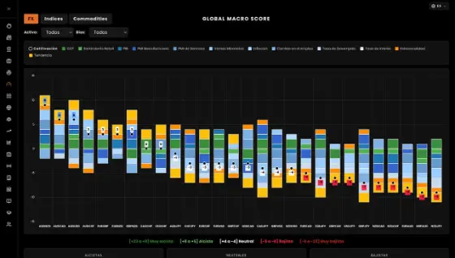

Global Macro Trend
$100,000 USD
Capital mínimo publicado.
Estrategia de gestión con mandato y parámetros de inversión definidos.

Conoce la TerminalDisponibilidad y condiciones sujetas a revisión individual. Invertir implica riesgo de pérdida.
Estrategias basadas en análisis del contexto económico, selección de activos, construcción de portafolios y control de riesgos.
Para inversionistas que desean explorar soluciones de gestión profesional, Global Macro Invest reúne estrategias basadas en análisis del contexto económico, selección de activos, construcción de portafolios y control de riesgos.
$100,000 USD
Capital mínimo publicado.
Estrategia de gestión con mandato y parámetros de inversión definidos.
$50,000 USD
Capital mínimo publicado.
Alternativa de gestión con un mandato y parámetros de riesgo diferenciados.
Eliges el horario en Calendly.
La disponibilidad, elegibilidad, estructura de cuentas, riesgos y condiciones contractuales se revisan individualmente con cada inversionista. Toda inversión implica riesgo, incluida la pérdida parcial o total del capital. Rendimientos pasados no garantizan resultados futuros.
Resolvemos las dudas más comunes sobre el ecosistema. Si no encuentras lo que buscas, agenda una sesión con nuestro equipo.
En tu propia cuenta, a tu nombre, con el bróker aliado. Global Macro Solutions no recibe ni custodia fondos de traders ni de inversionistas.
Agenda una sesión de 30 minutos con nuestro equipo de gestión. Revisamos tu perfil y te presentamos Global Macro Trend (capital mínimo publicado USD 100,000) y Global Macro Select (USD 50,000). La elegibilidad y las condiciones se revisan de forma individual.
Un ecosistema de análisis macro, tecnología y gestión de capital. Reúne Global Macro Terminal, una ruta de formación (Club de Traders, Acelerador, Trading Floor y Programa de Gestores), un equipo de gestión y Global Macro Invest. Operamos en México, Ecuador y Colombia.
Ya sea que busques desarrollar tus propias decisiones de trading o explorar una solución de gestión para tu capital, Global Macro Solutions te conecta con herramientas, metodología y un equipo especializado.
Todo análisis es informativo y educativo. Operar e invertir implica riesgo de pérdida. No garantizamos resultados ni rentabilidades futuras. Los servicios y las condiciones dependen de la jurisdicción y elegibilidad del cliente.